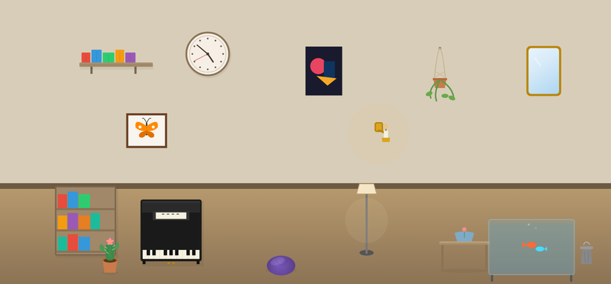
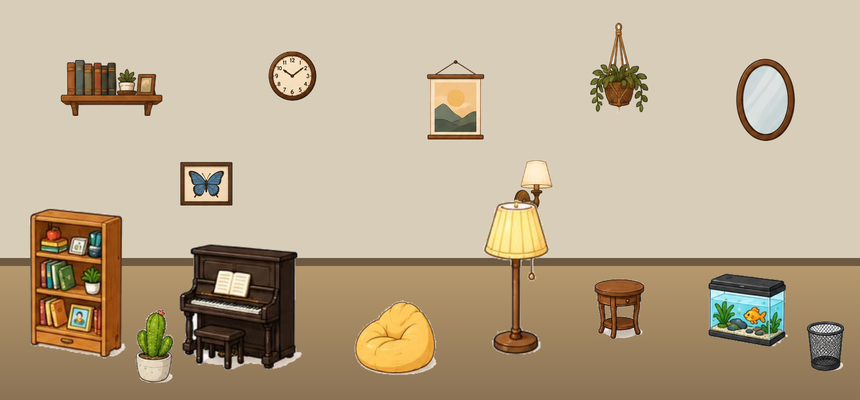
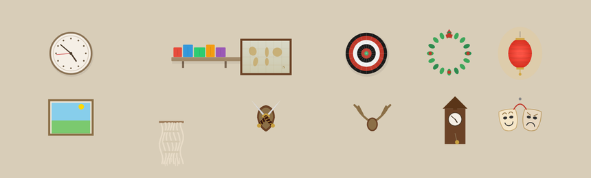
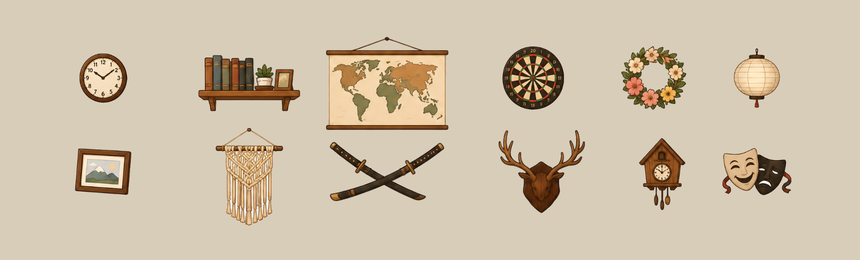
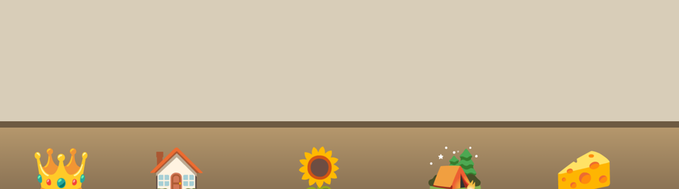
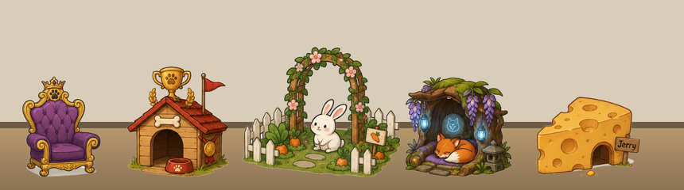
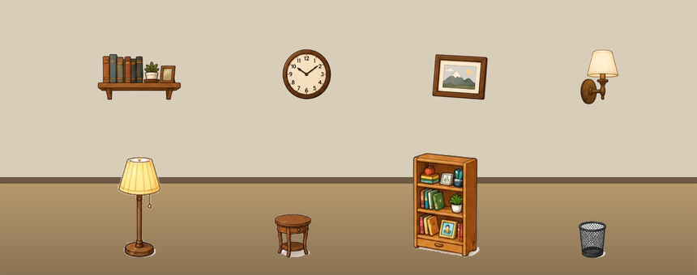
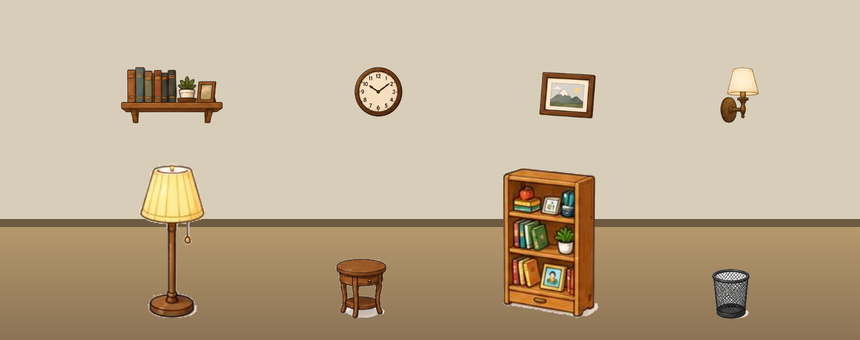

以前房间里每一件东西，都是程式用一条线一个圆拼出来的色块。
现在全部换成手绘图。


时钟、层架、地图、飞镖靶、花环、编织挂饰、武士刀、毕业证书……
一件一件重画，连花环中间的洞都是真的透的。
🏠 我的房间 → 🛒 商店 → 装饰 → 墙上


养宠物集满九宫格解锁的窝，以前就是个 👑、一个 🏠。
现在每一只都有自己的一整个窝 — 猫的王座、兔子的花园、狐狸的树洞。
点宠物 → 🎁 收集，看自己集到哪了


以前小东西画太大、大东西画太小 — 一个挂钟画得跟层架一样宽，一盏 1.6 米的落地灯比边桌高不了多少。
现在照真实尺寸重新校准。
没有校到完全写实 — 那样蓝牙音响会小到点不到
你原本买的、摆的一件都没有变，位置也都还在。
下次打开房间，它们就是新的样子了。
🏠 我的房间 · 直接拖就能换位置